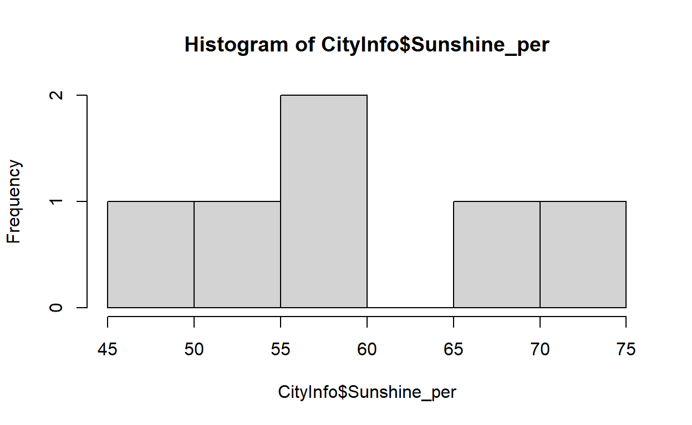
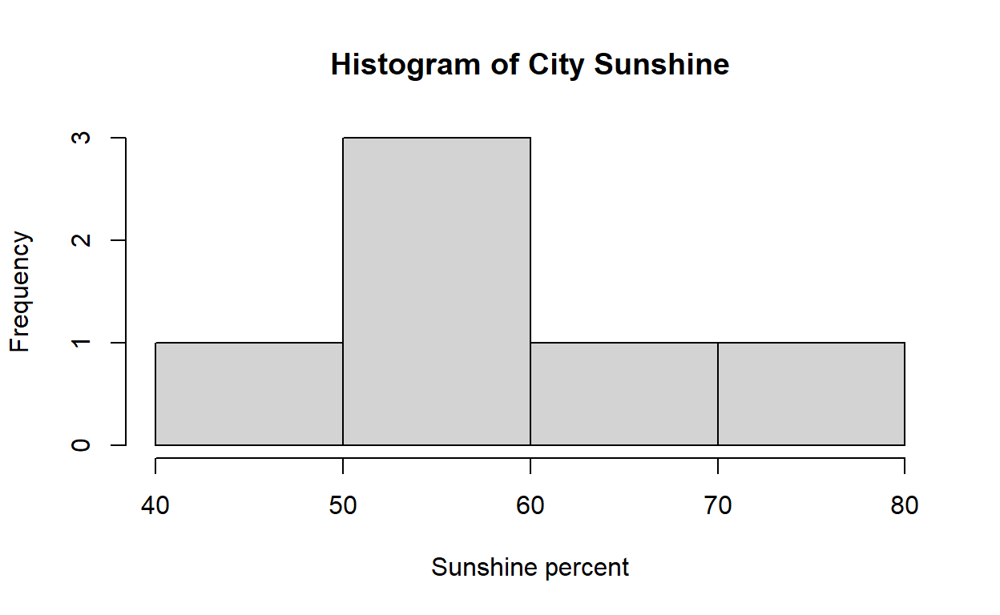

R is an incredibly powerful open-source tool for anthropologists, ecologists, humanities scholars, and others interested in data analysis and visualization. This tutorial will introduce you to the the basic components of coding in R.
Installing RStudio and R
Getting Started
When you type a command into R, the output will be printed into the console. R can do basic operations, just like a calculator.
Running Code
How do we get R to give us answers to our codes? We need to tell it to “run” our code. We can do this by using the “Run” button. We can also run code by putting our cursor on the line we want to run and pressing “Command(Mac)/Control(PC)” and “Return/Enter”.
Try running the following calculation examples
# Addition
5+2## [1] 7# Subtraction
10-4## [1] 6# Multiplication
4*7## [1] 28# Division
105/5## [1] 21Note: The # symbol is a way of “commenting” your
code.It is like putting a little description on what you are doing in
those lines. Anything after the # symbol in R won’t be run
and will be ignored. You can use it to describe what is going within the
code.
Try doing some arithmetic on your own in the box below. You can run the code by clicking on the blue “Run Code” button at the top right of the box below.
Data Types in R
Primary data types in R include: 1. numeric, 2. string or character,
3. logical, and 4. factor. Note that output data types do not always
match the input data. String data are entered with "" or
'' surrounding the characters.
"cheese"## [1] "cheese"'red'## [1] "red"Logical data can be represented by either: F or
FALSE. We’ll return to factors later.
Variables and Functions in R
While you can directly enter data each time you want to use it, R’s
power comes from assigning data to named objects or variables. Objects
are assigned using the <- symbol, which means
“everything on the right is now referred to by the object name on the
left”.
Let’s make an object or variable called x with the value
5.
x<-5
x## [1] 5You can also create variables using = but this is
generally discouraged as a practice. This is because = is
too easily confused with ==, which has a different
meanining. A single = means that whatever is on the left
hand side is now equal to the value on the right. A double equals sign
instead asks R to test whether or not the value on the left is or is not
equal to the value on the right, an equivalency test. The output is a
logical vector.
We will learn more about logical tests in R next week, but for now, let’s look at these examples.
5==5 #note that a double equals sign checks for equivalency in R## [1] TRUE5==6 #Comments in R are prefaced by a hashtag (#). This tells R not to run this line of code, and that it is for your reference only.## [1] FALSE#5=6 # Why doesn't this last line work?Practice Exercises
- Create an object
xwith value 1. - Run a test to evaluate if x is greater than 2.
- Run the following:
x=="x". Observe the result. - What is the result of adding 3 to x?
- Reassign x to 4.
- What happens if you run
e?
Click for solution
x<-1
x>2## [1] FALSEx=="x"## [1] FALSEx+3## [1] 4#"x"+3 # why doesn't this work?
x<-4
#eA Simple Function
R works by running functions on different datasets and variables.
Functions allow us to calculate statistics; summarize, transform and
visualize data; and so much more. Let’s start with our first function:
plot().
plot(cars)
cars is a dataset built into base R, that here R has
automatically decided to pull the speed and distance variables out and
create a scatterplot. You don’t need to worry about the specifics of how
and why this works for now, but pat yourself on the back for running
your first R function and making a cool (though mysterious) plot!
R is case sensitive
Something very important to keep in mind with R is that it is case sensitive, unlike some other languages. This is very important to know for keeping track of different variables and often a cause of many coding errors. For example, we can create three different objects referring to trees by changing the capialization.
Tree <- "tree"
TREE <- "tree again"
#tree # why doesn't this work?
tree <- "a third tree"
Tree## [1] "tree"TREE## [1] "tree again"tree## [1] "a third tree"Variable classes
As previously mentioned, there are several different types or classes
of data that can be assigned. We’ll cover a few basics here. Vectors can
have either string, logical, or numeric data; but only one class of
element per vector. You can check the class of a vector with the
class() function. In addition, R has built in checks for
different classes, such as is.numeric().
x <- seq(1,5)
is.numeric(x)
x <- c(1:5)
x <- c(1,10,"eleven", 27)
is.numeric(x)
x <- c(rep(T, 10), F, F, T)
xNote that R will automatically convert the numeric data into string data. This is called “coercion”.
Factors
Factors are useful for categorical data with explicit levels (which may or may not be ordered) such as M/F, Y/N or Income Brackets.
x <- factor(c("M", "F", "M", "M"), levels=c("M", "F"))
x## [1] M F M M
## Levels: M Fstr(x)## Factor w/ 2 levels "M","F": 1 2 1 1Practice Exercise
First let’s make a few different objects and then examine them with
class(). Try to predict in advance which data class each
object will be.
tree <- "a third tree"
x <- TRUE
y <- "5"
z <- 5Create the objects first in the following code chunk as shown above
and then observe their class.
Working with vectors and dataframes
Creating vectors with c()
Vectors are one-dimensional sets of values, which can be created
using the concatenate function (among others). Functions in
R are denoted as functionname(), in this case
c().
Whenever you encounter a new function or want to look up how to use a
function, you can refer to the help file. What does c()
do?
?c()Let’s try one of the examples from the help file.
c(1,7:9). What is the result?
c(1,7:9) #what is the `:` operator doing?## [1] 1 7 8 9c(1,7:50) ## [1] 1 7 8 9 10 11 12 13 14 15 16 17 18 19 20 21 22 23 24 25 26 27 28 29 30
## [26] 31 32 33 34 35 36 37 38 39 40 41 42 43 44 45 46 47 48 49 50We can also make vectors using character data. Let’s make a vector
called Cities:
Cities <- c("New York", "Los Angeles", "San Francisco", "Chicago","Minneapolis")Look at our new object:
Cities## [1] "New York" "Los Angeles" "San Francisco" "Chicago"
## [5] "Minneapolis"Your can select individual elements from a vector:
Cities[2]## [1] "Los Angeles"Cities[c(2,3)]## [1] "Los Angeles" "San Francisco"Don’t forget that R is case sensitive. What happens when you enter
cities?
citiesYou can add new values to an existing vector:
Cities <- c(Cities, "Portland")Check out your handiwork. Call the Cities vector:
Cities## [1] "New York" "Los Angeles" "San Francisco" "Chicago"
## [5] "Minneapolis" "Portland"Practice Exercise
- You can also make an entirely new object with the same name. Make a
new vector called
Citieswith three new city names. Look at your newCitiesobject. What happened to the old cities?
- Reassign the
Citiesobject to the following cities: “New York”, “Los Angeles”, “San Francisco”, “Chicago”,“Minneapolis”,“Portland”`.
Creating vectors with rep() and seq()
There are many ways to create vectors in R. These two commonly used functions can repeat values or return a sequence of values.
rep(6,times=10) #repeating a single number## [1] 6 6 6 6 6 6 6 6 6 6rep(c("a","b"),10) #repeating several values## [1] "a" "b" "a" "b" "a" "b" "a" "b" "a" "b" "a" "b" "a" "b" "a" "b" "a" "b" "a"
## [20] "b"rep(c("a","b"),c(5,5)) # repeating each value in a sequence multiple times## [1] "a" "a" "a" "a" "a" "b" "b" "b" "b" "b"Practice Exercise
Using 3 different methods, create a variable that is a sequence of
the numbers 1-3, repeated in order 4 times. Hint: read the
seq() help file.
Click for solution
test <- rep(seq(1,3),4)
test## [1] 1 2 3 1 2 3 1 2 3 1 2 3test <- rep(seq(1:3),4)
test## [1] 1 2 3 1 2 3 1 2 3 1 2 3test <- rep(c(1:3),4)
test## [1] 1 2 3 1 2 3 1 2 3 1 2 3rep(seq(from=1,to=3),4)## [1] 1 2 3 1 2 3 1 2 3 1 2 3Dataframes
While data can be stored in lists and matrices, the most common and flexible data format you will use in R is a dataframe. Dataframes can contain multiple classes of data, but only one class per vector. Data frames are usually organized with each row representing a single case. Columns denote variables which apply across cases.
Let’s make a CityInfo dataframe.
Make two vectors:
Statewith the values: NY, CA, CA, IL, MN, OR. Hint: Use thec()function.Sunshine_perwith the values: 58, 73, 66, 54, 58, 48. These values denote the average percent of total possible annual sunshine experienced in each city.
State <- c("NY","CA","CA","IL","MN","OR")
Sunshine_per <- c(58, 73, 66, 54, 58, 48)We can combine these vectors together using cbind()
which binds the columns together.
State <- c("NY","CA","CA","IL","MN","OR")
Sunshine_per <- c(58, 73, 66, 54, 58, 48)
cbind(Cities, State, Sunshine_per) # combining the vectors## Cities State Sunshine_per
## [1,] "New York" "NY" "58"
## [2,] "Los Angeles" "CA" "73"
## [3,] "San Francisco" "CA" "66"
## [4,] "Chicago" "IL" "54"
## [5,] "Minneapolis" "MN" "58"
## [6,] "Portland" "OR" "48"You’ll notice that cbind() coerces the data into
characters. R has multiple ways to combine vectors into dataframes. Here
we use the data.frame() function.
CityInfo<-data.frame(Cities,State,Sunshine_per)
CityInfoNow we have created a CityInfo object that is equivalent to a dataframe of the three vectors about cities we created earlier. R can give us summary and structural information about our new dataframe:
names(CityInfo)## [1] "Cities" "State" "Sunshine_per"str(CityInfo)## 'data.frame': 6 obs. of 3 variables:
## $ Cities : chr "New York" "Los Angeles" "San Francisco" "Chicago" ...
## $ State : chr "NY" "CA" "CA" "IL" ...
## $ Sunshine_per: num 58 73 66 54 58 48summary(CityInfo)## Cities State Sunshine_per
## Length:6 Length:6 Min. :48.0
## Class :character Class :character 1st Qu.:55.0
## Mode :character Mode :character Median :58.0
## Mean :59.5
## 3rd Qu.:64.0
## Max. :73.0nrow(CityInfo)## [1] 6ncol(CityInfo)## [1] 3Selecting and subsetting variables
Subsetting with $
In wide format, each row in a dataframe is a case, while the columns
are variables that are measures for each case. To select a variable in a
dataframe, you use the $ operator.
Call the Sunshine_per column using the $
operator. What data class is it?
CityInfo$Sunshine_per
class(CityInfo$Sunshine_per)Subsetting with [,]
Dataframes can be subset using the format
dfname[row#,col#], or by calling columns by name.
CityInfo[1,1]## [1] "New York"CityInfo[,3]## [1] 58 73 66 54 58 48CityInfo[2,]CityInfo[,"State"]## [1] "NY" "CA" "CA" "IL" "MN" "OR"You can also subset dataframes based on logical tests. Let’s look at all the cities and states for which enjoy over 55% sunshine. Then let’s examine all the columns for any rows where the state is equal to California.
CityInfo[CityInfo$Sunshine_per>55,c("Cities","State")]
CityInfo[CityInfo$Sunshine_per>55,1:2]
#cityInfo[CityInfo$State==CA,]What’s wrong with this last line of code? Try to think about it! (Hint: 2 things)
Using subset()
We can also subset dataframes with a specific function:
subset(). Let’s examine the help file to see what this
function does.
?subset()Let’s subset all the data for cities with sunshine percentages greater than 55
subset(CityInfo, Sunshine_per>55)You can subset based on multiple conditions.
subset(CityInfo, State=="CA" & Sunshine_per > 55)You can also use the | operator to select cases which
have one or the other condition.
subset(CityInfo, State=="CA" | Sunshine_per >55)Practice Exercise
Exercise 4.1
Add the code to display all columns for all the rows in which the state is California.
Cities <- c("New York", "Los Angeles", "San Francisco", "Chicago","Minneapolis","Portland")
CityInfo<-data.frame(Cities,State,Sunshine_per)CityInfo[CityInfo$State=="CA",] Exercise 4.2
Using the ! operator, we can also select all rows which
are ‘not equal’ to a given value. Select all the rows for cities outside
of California.
CityInfo[CityInfo$State!="CA",] Descriptive statistics
Averages and vector characteristics
Often when exploring data we are interested in some basic descriptive statistics such as the mean, median and mode. R has functions built in for this.
mean(CityInfo$Sunshine_per)## [1] 59.5median(CityInfo$Sunshine_per)## [1] 58mode(CityInfo$Sunshine_per)## [1] "numeric"length(CityInfo$Sunshine_per)## [1] 6max(CityInfo$Sunshine_per)## [1] 73sum(CityInfo$Sunshine_per)## [1] 357We can also examine the spread of the data by making a histogram.
hist(CityInfo$Sunshine_per)
This doesn’t look the best, so we might want to update the bin size and add a title. We don’t have many observations here, but you can see how in principle, adjusting the bin size can change your interpretation of the data distribution.
hist(CityInfo$Sunshine_per, breaks=3,main="Histogram of City Sunshine", xlab="Sunshine percent", ylab="Frequency")
Vector arithmetic
We can also run calculations on vectors as a whole. Something to keep note of is that R will recycle through each vector during vector arithmetic. R doesn’t always return a warning when this is occuring, so be sure to keep this in mind.
CityInfo$Sunshine_per## [1] 58 73 66 54 58 48CityInfo$Sunshine_per / 2## [1] 29.0 36.5 33.0 27.0 29.0 24.0CityInfo$Sunshine_per / c(10,1) # how does R treat the two vectors during this operation?## [1] 5.8 73.0 6.6 54.0 5.8 48.0CityInfo$Sunshine_per / c(10,1, 2)## [1] 5.8 73.0 33.0 5.4 58.0 24.0CityInfo$Sunshine_per + 2## [1] 60 75 68 56 60 50Summarizing character vectors
Sometimes you might encounter a long list of values that you would like to summarize. There are several ways of quickly assessing the basic attributes of a vector.
# First we make a fruits vector
fruits <- rep(c("apple", "orange","banana","pear", "pineapple"), c(10))
fruits <- c(fruits, rep(c("mango", "blueberry"), 2))
unique(fruits) # returns the name of each unique named fruit## [1] "apple" "orange" "banana" "pear" "pineapple" "mango"
## [7] "blueberry"length(unique(fruits)) # how many unique fruits are there?## [1] 7table(fruits) # returns a table of the number of times each fruit appears in the vector## fruits
## apple banana blueberry mango orange pear pineapple
## 10 10 2 2 10 10 10Missing values
In an ideal world, every data cell would be filled in every data table…but this is rarely the case. Sometimes (ok, frequently) we encounter missing values. But what is a missing value and how does R deal with them? How do you know a missing value when you see it?
R codes missing values as NA (not “NA” which is a
character/string element). Having missing values in a dataframe can
cause some functions to fail. Check out the following example.
missingparts <- c(1, 2, 3, NA)
mean(missingparts) # what is the result?## [1] NAmean(missingparts, na.rm=T) # we can tell the function to ignore any NA values in the data## [1] 2missingparts[is.na(missingparts)] #you can also subset out only the values that are equal to NA. This is not so useful here, but can be useful when you want to isolate rows in a dataframe that have missing values in particular columns.## [1] NAPractice Exercise
How do you know you have missing values rather than another issue in
your code? There are a few functions that allow us to pick out the NAs.
Try examining the missingparts vector with
str(), summary(), and is.na().
What is the result of each of these functions and how might this output
be useful?
missingparts <- c(1, 2, 3, NA)